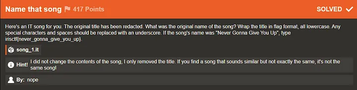
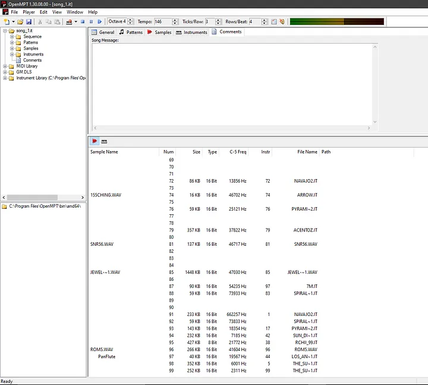
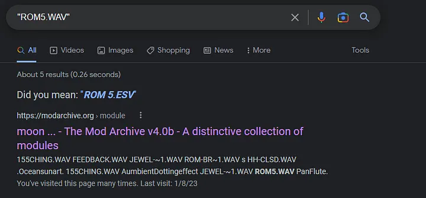
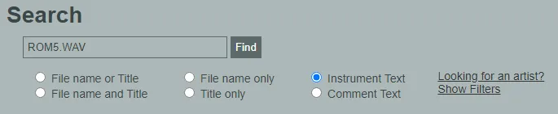
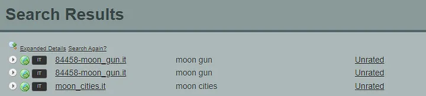
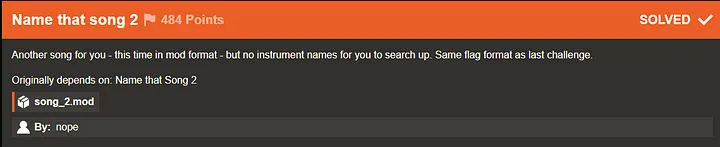
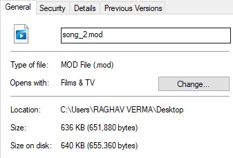
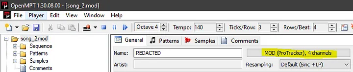
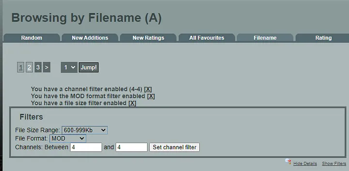

IrisCTF 2023 — Name that song && Name that song 2 Write-up
Greetings everyone. Welcome to another write-up in our series covering the challenges from the Iris CTF 2023 event. Today, we’ll be discussing two interesting OSINT-like challenges from the Miscellaneous category: Name that Song and Name that Song 2. The challenge prompt for the first challenge reads:
Name that song

So, we’re given a file called song_1.it. It’s an Impulse Tracker file that can be played on various software, like Schism Tracker, OpenMPT, and Impulse Tracker itself. We’ll be using OpenMPT to analyze this file, as compared to the other software we tried, there’s more information to work with.
Let’s open it up in OpenMPT.

So, when we open the file in OpenMPT, we see a bunch of folders on the left margin. From what I understand, these files are patterns of instruments used as samples compiled into one single file. It’s a sort of MIDI-like format, but instead of a bland piano tune, you have 8-bit/16-bit instruments to supplement the resulting sound.
With that said, let’s check the Comments section. We see a couple of file names, including a couple of .it files and some .wav files as well. When we try to Google one of these .wav files, we find the following:

We find this particular .it file called moon_cities.it on modarchive.org. When we try to play it, it sounds VERY similar to the file we were provided with, but unfortunately my initial answer was incorrect.
As it turns out, modarchive.org has a search API endpoint with filters that can be very useful for our purposes.

Since we know that we found ROM5.WAV in the instruments used in the file, we should be able to find more files like moon_cities.it by using the ROM5.WAV as a search keyword in modarchive.org’s API endpoint with filters.

And we do find another file other than moon_cities.it. Thus, the answer to the challenge was irisctf{moon_guns}. This was simple enough.
Name that song 2
The next stage of this challenge of finding songs becomes a little more harder. Let’s see the prompt for Name that Song 2:

Now this time we are given a .mod file instead of an .it file. I decided to use the search API again for this, but focused on more granular details. In the Comments section of the file, we see no names on OpenMPT. So, I decided to use the filters in the Browse by Filename part of the site to find the file by size.

The size of this file is 636 KB. Furthermore, this file uses 4 channels as well.

We use these facts as filters and look up each song in the results. As you can see below, we set the filters accordingly.

The site uses https://modarchive.org/index.php?request=view_by_list&query=A to search for files. Using the applied filters, I simply change the query=A part to B or C or D and so on. I basically bruteforced every song given their extended details on file size and hit upon the exact song eventually. Which was this:
Thus, the flag was irisctf{hit_and_run}.